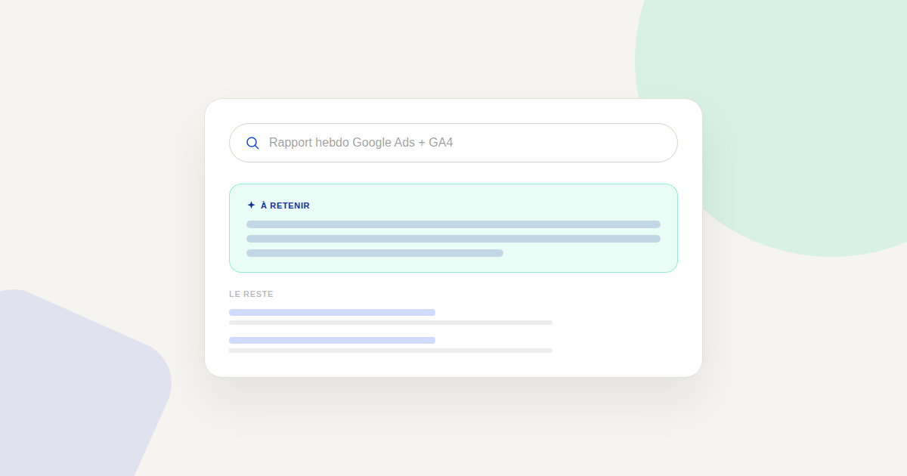
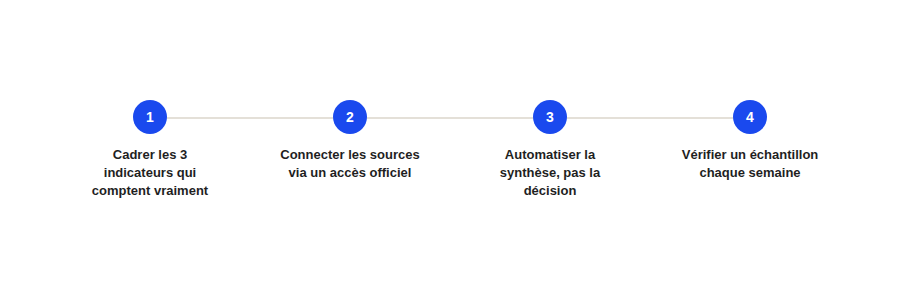

Automatiser son reporting marketing avec l'IA sans usine à gaz : la méthode en 4 étapes
Le reporting marketing est souvent la première tâche qu'on veut confier à l'IA — et la première où on se plante en essayant de tout automatiser d'un coup. Voici la méthode en 4 étapes qui évite l'usine à gaz.

Le reporting marketing est l'un des cas d'usage les plus demandés quand on parle d'IA en entreprise — et l'un de ceux où je vois le plus d'échecs, généralement pour la même raison : on automatise directement, sans avoir d'abord cadré ce qui doit vraiment être mesuré. Voici la méthode qui fonctionne, en 4 étapes dans l'ordre.
Étape 1 — Cadrer les indicateurs qui comptent vraiment
Avant de connecter le moindre outil, listez les 3 à 5 indicateurs qui déclenchent réellement une décision dans votre organisation — pas les 40 métriques disponibles dans GA4 par défaut. Un rapport automatisé qui ressort 40 chiffres chaque semaine n'est pas lu ; un rapport qui en ressort 4, avec leur évolution et un seuil d'alerte, l'est.
Étape 2 — Connecter les sources via un accès officiel
C'est l'étape où le Model Context Protocol (MCP) change concrètement la donne : au lieu d'exporter manuellement un CSV de Google Analytics chaque semaine, un connecteur MCP officiel permet à votre assistant IA de lire directement les données à la demande, en lecture seule si c'est suffisant pour votre usage. Privilégiez toujours le connecteur officiel de l'éditeur — voir le Kit MCP Marketing pour la liste vérifiée par plateforme (Google Analytics, Google Ads, HubSpot...).

Étape 3 — Automatiser la synthèse, jamais la décision
L'IA peut très bien produire chaque semaine un résumé en langage naturel de vos indicateurs cadrés à l'étape 1 : « le CAC a augmenté de X, principalement sur le canal Y ». Ce que l'automatisation ne doit pas faire, c'est décider seule d'une action corrective (couper un budget, arrêter une campagne) sans validation humaine — le rôle de l'IA ici est d'accélérer la lecture, pas de remplacer l'arbitrage.
Étape 4 — Vérifier un échantillon chaque semaine
Même un rapport bien cadré peut dériver si une source de données change silencieusement (une balise mal posée, un import interrompu). Gardez l'habitude de vérifier manuellement un échantillon du rapport automatisé chaque semaine, en particulier dans le premier mois — c'est la meilleure protection contre une automatisation qui tourne dans le vide sans que personne ne le remarque.
Ce que cette méthode évite
Les deux pièges les plus fréquents que je vois sont symétriques : automatiser trop vite un reporting mal cadré (qui produit beaucoup de chiffres inutiles, vite abandonnés), ou refuser toute automatisation par méfiance et continuer à perdre plusieurs heures chaque semaine sur un export manuel. La méthode en 4 étapes évite les deux, en remettant le cadrage humain avant la technique, et la vérification humaine après.
FAQ
Combien de temps prend la mise en place d'un reporting automatisé ?
Le cadrage (étape 1) prend généralement plus de temps que la connexion technique elle-même, surtout si les indicateurs qui comptent n'ont jamais été formalisés clairement. Comptez plusieurs échanges internes avant la mise en place technique.
Faut-il un développeur pour connecter les données via MCP ?
Non pour la plupart des connecteurs officiels (Google Analytics, HubSpot, Notion), qui se branchent par authentification classique depuis les réglages de l'assistant IA.
Le reporting automatisé remplace-t-il un tableau de bord GA4 ou Looker Studio ?
Non, il les complète : le tableau de bord reste la source de vérité visuelle, le rapport en langage naturel généré par l'IA sert à en extraire rapidement les points d'attention sans avoir à l'ouvrir et l'interpréter à chaque fois.
Envie d'un reporting marketing qui vous fait vraiment gagner du temps ?
Pour aller plus loin, voir le Kit MCP Marketing, la page Analytics, et la page MCP pour le marketing.
Pour continuer sur ce sujet.